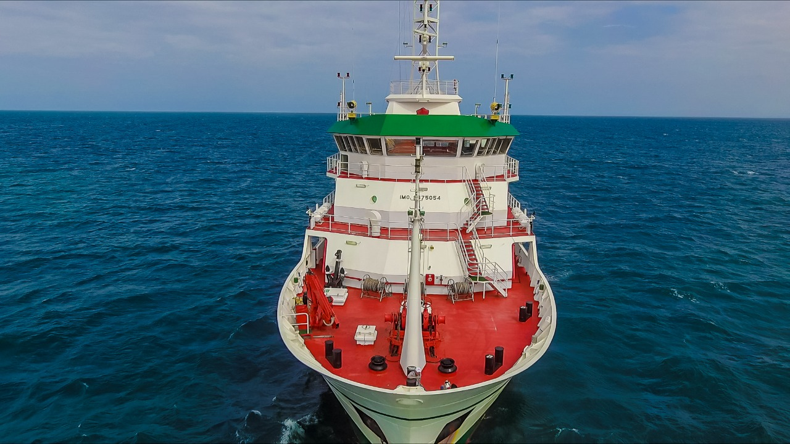
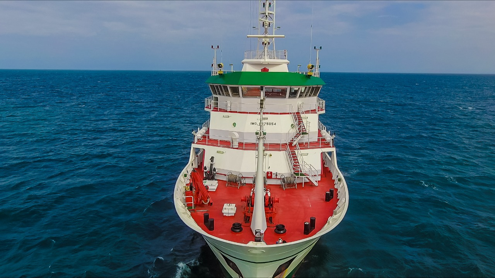

Geoportal del INAPESCA (GEOPESCA) B/I Dr. Jorge Carranza Fraser
El Instituto Nacional de Pesca y Acuacultura (INAPESCA) está dedicado a la investigación aplicada para promover el desarrollo y sustentabilidad del sector pesquero y acuícola en México. Para apoyar el desarrollo de las actividades de investigación, en el 2014 el gobierno mexicano a través del INAPESCA adquirió una embarcación equipada con la tecnología más avanzada para el estudio de los mares de nuestro país. Esta plataforma llamada Dr. Jorge Carranza Fraser, en honor a un destacado investigador de las ciencias pesqueras en México, ha navegado prácticamente el 100% de la Zona Económica Exclusiva mexicana y ha desarrollado estudios pesqueros y oceanográficos en nuestros mares e incluso de cooperación internacional como por ejemplo en el atolón de Clipperton con el Gobierno Francés y en la costa del Pacífico y el Caribe de América Central en cooperación con la FAO y los países que conforman esta región.
Durante estas investigaciones se ha generado información científica sin precedentes de diferentes campos del conocimiento, como biología pesquera, acústica, oceanografía física y química, plancton, meteorología, geología, entre otras. Por esta razón el INAPESCA en su firme compromiso por difundir las actividades de investigación impulsadas a bordo de este buque, desarrolló una plataforma que compila esta información en mapas dinámicos que permiten al usuario, interactuar con algunos de los resultados generados. GEOPESCA (Geoportal del INAPESCA) es una herramienta que tiene como principal objetivo, vincular entre las actividades científicas con el sector pesquero, académico y público en general.
 
